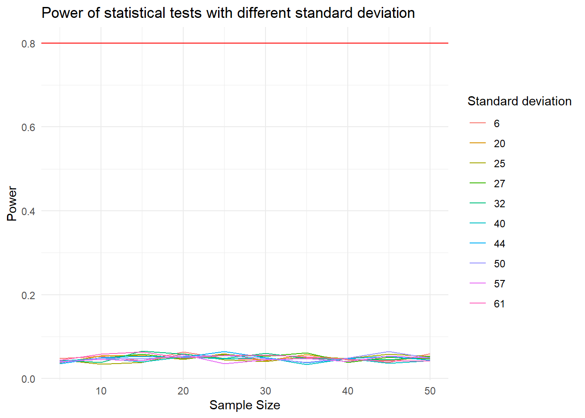
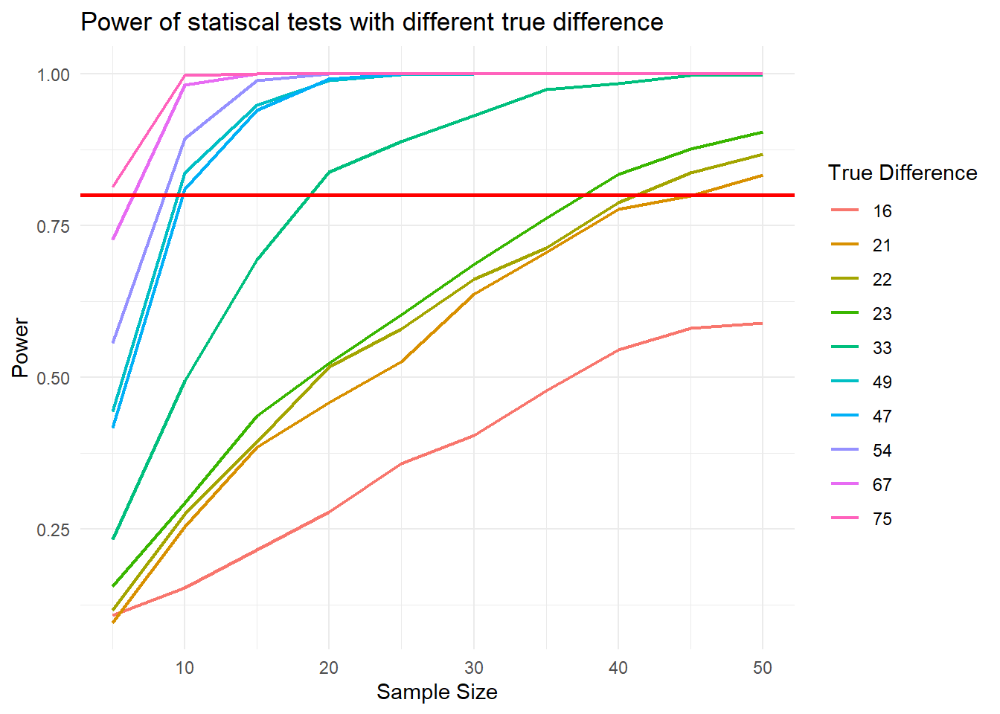
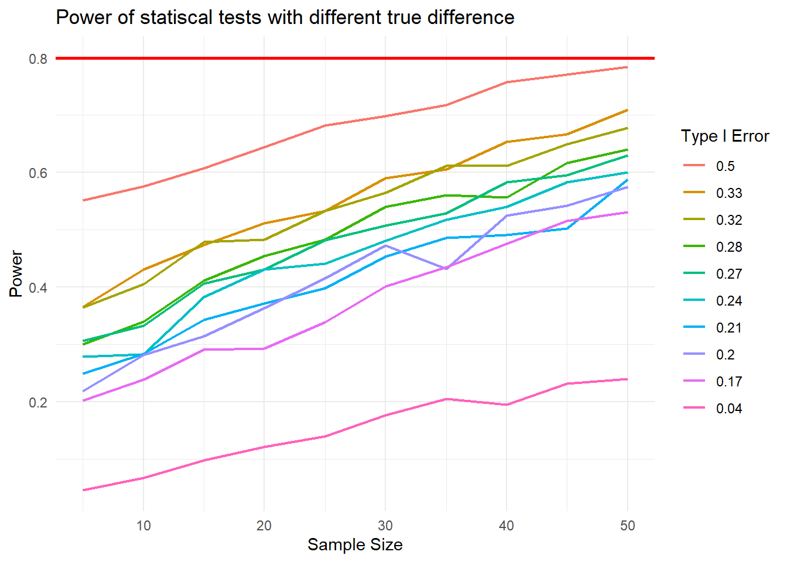

library(tidyverse)
library(ggplot2)
library(tibble)
library(patchwork)
library(forcats)Mini Project 2: Simulation - The Effects of Two Factors On The Power of A Statistical Test
Overview:
Power of a statistical test: the probability that it rejects the null hypothesis when the null hypothesis is false or the probability that a statistical test can detect when a true difference exists
There are some factors that affect the power of a statistical test:
Variability in the data (variance)
True difference
Type I Error Level
Size of the sample
While we evaluate the effect of these factors on the power, we will especially consider the intercept at 0.8. Power is usually set at 80%. This means that if there are true effects to be found in 100 different studies with 80% power, only 80 out of 100 statistical tests will actually detect them. The reason why we choose this value is that the minimum power of a study required is 80%.
Below is a generalized function to compute the power of each statistical test based on the four important factors (size of sample, type I error level or significance leve, standard deviation, and difference in mean:
power_stat_test <- function(mean1, mean_diff, sd, type_1_error_level, numsims,iter){
#list of power values after all iterations
power_vals <- vector("double",iter)
#list of sample size value
sample_size <- vector("numeric",iter)
#calculate the mean of the second group
mean2 <- mean1 + mean_diff
#calculate the standard deviation of the second group
for (k in 1:iter) {
significant <- vector("logical", numsims)
n1 <- 5 * k
n2 <- n1
for (i in 1:numsims) {
samp1 <- rnorm(n1, mean1, sd)
samp2 <- rnorm(n2, mean2, sd)
p_value <- t.test(x = samp1, y = samp2)$p.value
significant[i] <- (p_value < type_1_error_level)
}
power_vals[k] <- mean(significant)
sample_size[k] <- n1
}
return(list(sample_size,power_vals))
}This function takes these parameters:
| Parameter | Purpose |
|---|---|
mean1 |
The mean value of the first group |
mean_diff |
The true difference in mean value of two groups |
sd |
The standard deviation of two groups |
type_1_error_level |
Type I error level or the risk of making a Type I error |
numsims |
Number of statistics tests on the same simulated data set (=1000) |
iter |
This value used for the purpose of testing the simulated data set with a factor changing over the time and other factors remain the same |
Some parameters can be constant between tests so I will initialize it here:
mean1 <- 225
iter <- 10
type_1_error_level <- 0.05
numsims <- 1000
sd <- 35Factor 1: Variance
The first factor we are going to examine is variance. We will evaluate \(\sigma=\sqrt{Variance}\).
This is a list of randomized standard deviation.
sd_diff <- sample(5:75,iter)
print(sd_diff) [1] 29 13 21 48 37 71 64 47 51 72#A list storing the results
combined_data <- tibble(n_per_group = numeric(), power = numeric(), sd_diff_val = numeric())
for (val in sd_diff) {
result <- power_stat_test(mean1, 0, val, type_1_error_level, numsims, iter)
temp_data <- tibble(n_per_group = result[[1]], power = result[[2]], sd_diff_val = rep(val, length(result[[1]])))
combined_data <- rbind(combined_data, temp_data)
}
ggplot(combined_data, aes(x = n_per_group, y = power, color = as.factor(sd_diff_val))) +
geom_line() +
geom_hline(yintercept = 0.8, color = "red") +
labs(color = "SD Difference")+
theme_minimal() +
labs(x="Sample Size", y = "Power", color="Standard deviation",title="Power of statistical tests with different standard deviation")
Though the power of each case is approximately the same, according to the legend that is sorted based on the power and the sample size, the cases with smaller deviation seems to have larger power.
Experimenters can control the standard deviation by sampling a homogeneous population of subjects, by reducing random measurement error and/or by making sure the experimental procedures are applied very consistent.
Factor 2: Size of the true difference
Next, we will evaluate the factor true difference, which is \(|\Delta_{mean1-mean2}|\).
true_diff <- sample(0:100,iter)
print(true_diff) [1] 56 32 9 50 37 21 42 55 65 51combined_data_mean <- tibble(n_per_group = numeric(), power = numeric(), true_diff_val = numeric())
for (val in true_diff) {
result <- power_stat_test(mean1, val, sd, type_1_error_level, numsims, iter)
temp_data <- tibble(n_per_group = result[[1]], power = result[[2]], true_diff_val = rep(val, length(result[[1]])))
combined_data_mean <- rbind(combined_data_mean, temp_data)
}ggplot(combined_data_mean,
aes(x = n_per_group,
y = power,
color=fct_reorder(as.factor(true_diff_val),power))) +
geom_line(linewidth=0.8)+
geom_hline(yintercept = 0.8, color = "red", linewidth=1) +
labs(x="Sample Size",
y = "Power",
color="True Difference",
title="Power of statiscal tests with different true difference")+
theme_minimal()
From the graph, we can see that the higher the true difference is, the higher the power is. As the sample size grows larger with significant true difference, the power approaches 1 faster.
Factor 3: Type 1 Error Level
The third factor we will evaluate is Type I Error Level \(\alpha\).
This is a list of randomized Type I Error Level.
type_1_error_level <- sample(seq(0.01, 0.5, by = 0.01), iter, replace = TRUE)combined_data_error <- tibble(n_per_group = numeric(), power = numeric(), error_level = numeric())
type_1_error_level [1] 0.24 0.11 0.07 0.08 0.42 0.24 0.02 0.19 0.28 0.40for (val in type_1_error_level) {
result <- power_stat_test(mean1,10, sd, val, numsims, iter)
temp_data <- tibble(n_per_group = result[[1]], power = result[[2]], error_level = rep(val, length(result[[1]])))
combined_data_error <- rbind(combined_data_error, temp_data)
}ggplot(combined_data_error, aes(x = n_per_group, y = power, color = fct_reorder2(as.factor(error_level),n_per_group,power))) +
geom_line(linewidth=0.8) +
geom_hline(yintercept = 0.8, color = "red", linewidth=1) +
labs(color = "Type I Error")+
labs(x="Sample Size",
y = "Power",
color="Type I Error",
title="Power of statiscal tests with different true difference")+
theme_minimal()
The relationship between the Type I Error Level and power: the more the the Type I Error Level is, the higher the power is. The stronger the evidence needed to reject the null hypothesis, the lower the chance that the hypothesis will be rejected.
Factor 4: Sample size
From those graphs above, we can see an obvious pattern that the larger the sample size, the higher the power with other factors remain the same. Since sample size is typically under an experimenter’s control, increasing sample is one way to increase power.